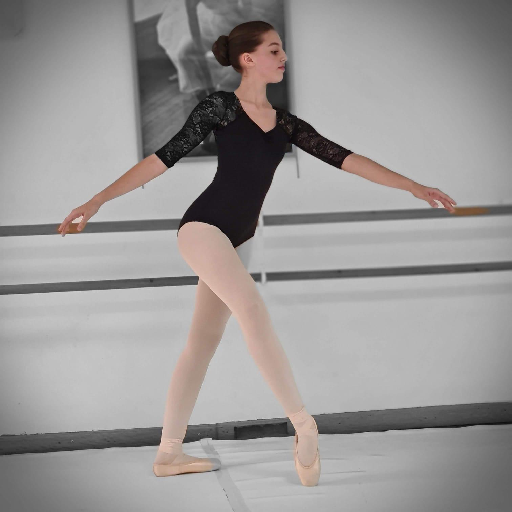
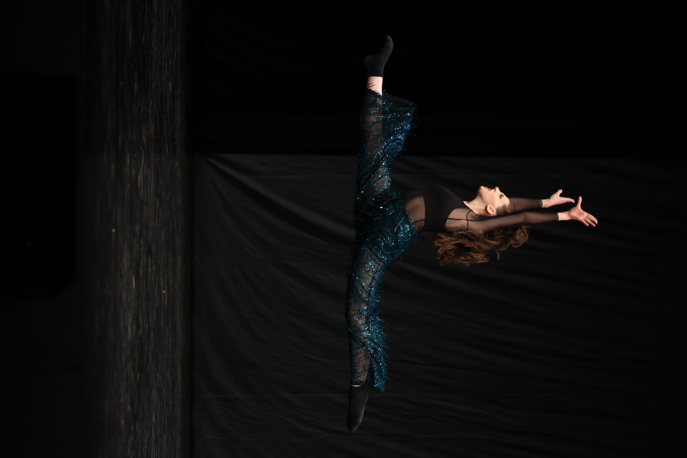

Sobre Mí
Soy bailarina desde los tres años, y desde entonces la danza se ha convertido en una parte esencial de mi vida. A lo largo de los años he explorado y practicado diversos estilos, desde el ballet clásico hasta el hiphop, pasando por contemporáneo, jazz y otros géneros. Esta versatilidad me ha permitido crecer como artista y presentarme en numerosas competiciones, en las que he tenido la suerte de ganar premios tanto a nivel nacional como internacional. Aunque sé que el mundo de las artes escénicas es muy exigente y que vivir de ello no es fácil, mi sueño es dedicarme profesionalmente a esta pasión. Bailar es mi forma de expresarme, y lucharé por seguir en este camino, por difícil que sea.
Estilos de Baile
Ballet
Contemporáneo
Jazz
K-Pop

Premios y Reconocimientos
Primer premio en Concurso Ciudad de Santander
Clásico infantil - 2017
Clásico infantil - 2017
Primer premio en Concurso Ciudad de Santander
Clásico infantil - 2018
Clásico infantil - 2018
Primer premio en Europeo de Paris
Contemporáneo juvenil - 2022
Contemporáneo juvenil - 2022
Primer premio en Concurso Orbe de Burgos
Contemporáneo juvenil - 2023
Contemporáneo juvenil - 2023
Bailarina revelación contemporáneo
Certamen Nacional - 2023
Certamen Nacional - 2023
Primer premio en Concurso Marina Baixa de Alicante
Clásico absoluta - 2023
Clásico absoluta - 2023
Clasificada Europeo de Holanda
Sólo Jazz - 2024
Sólo Jazz - 2024
Primer premio en Europeo
Duo Contemporáneo juvenil - 2024
Duo Contemporáneo juvenil - 2024
Primer premio en Concurso Orbe de Burgos
Jazz joven - 2025
Jazz joven - 2025
Primer premio en Concurso Orbe de Burgos
Jazz Senior - 2025
Jazz Senior - 2025
Certificación Ballet Advance
Royal Academy of Dance Londres
Royal Academy of Dance Londres